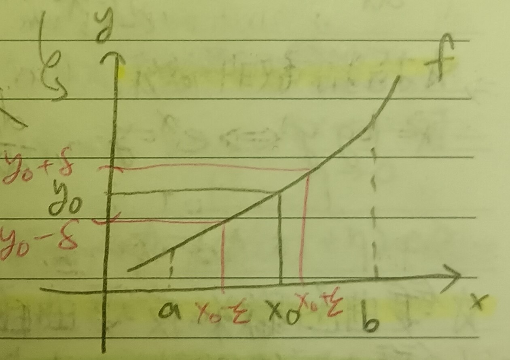

這份筆記是關於反函數的各種性質。
反函數的微分
定義 1：反函數 (Inverse Function)
給定\([a,b]\)上的一對一函數\(f\)，若有函數\(\phi\)使得 \[ f(x)=y\Leftrightarrow \phi(y)=x \] 則稱\(\phi\)是\(f\)的反函數。
引理 2
給定在\([a,b]\)上的連續嚴格遞增函數\(f\)，則其反函數\(\phi\)也是連續的。
證明：我們希望說明對於一個點\(y_0=f(x_0)\)而言，給定\(\epsilon>0\)，存在\(\delta>0\) s.t. \(|y-y_0|<\delta\)時總有\(|\phi(y)-\phi(y_0)|<\epsilon\)(見下圖1)。
令\(y_1=f(x_0-\epsilon)\), \(y_2=f(x_0+\epsilon)\)。則由\(f\)嚴格遞增知\(y_1<y_0<y_2\)。我們選定\(\delta\)使得\(y_1<y_0-\delta<y_0<y_0+\delta<y_2\)，則當\(y\in(y_0-\delta,y_0+\delta)\)時，有\(\phi(y)\in(x_0-\epsilon,x_0+\epsilon)\)。於是可知\(\phi\)連續。QED
定理 3
假設\(f\)在\((a,b)\)上可微且在\([a,b]\)上連續，並假設對所有\(x\)有\(f'(x)>0\)(即\(f\)在\([a,b]\)上嚴格遞增(這裡的性質5)，也即是一對一)或\(f'(x)<0\)(即嚴格遞減)。則其反函數\(\phi\)可微，且 \[
\phi'(y)=\frac{1}{f'(x)}
\] 這裡\(\phi'(y)\)指的是\(\frac{d\phi}{dy}\)。
證明 1：令\(f(x)=y\), \(f(x_1)=y_1\)，則 \[
\lim_{y\to y_1}\frac{\phi(y)-\phi(y_1)}{y-y_1}=\lim_{x\to
x_1}\frac{x-x_1}{f(x)-f(x_1)}=\lim_{x\to
x_1}\frac{1}{\frac{f(x)-f(x_1)}{x-x_1}}=\frac{1}{f'(x)}
\] QED
證明 2：我們希望說明 \[ \lim_{k\to 0}\frac{\phi(y+k)-\phi(y)}{k}=\lim_{h\to 0}\frac{1}{\frac{f(x+h)-f(x)}{h}} \] ，其中\(f(x)=y\)。令\(h=\phi(y+k)-\phi(y)=\phi(y+k)-x\)(\(\phi\)連續，故\(k\to 0\)時\(h\to 0\))，故\(\phi(y+k)=x+h\)，即\(f(x+h)=y+k\)，故有\(f(x+h)-f(x)=k\)。而\(k\neq 0\)時\(h\neq 0\)，故 \[ \begin{aligned} \lim_{k\to 0}\frac{\phi(y+k)-\phi(y)}{k}&=\lim_{h\to 0}\frac{h}{f(x+h)-f(x)}\\ &=\lim_{h\to 0}\frac{1}{\frac{f(x+h)-f(x)}{h}}\\ &=\frac{1}{f'(x)} \end{aligned} \] QED
反三角函數的微分
定義 4：反正弦函數 (Inverse Sine Function)
考慮\(y=\sin x\)，將\(x\)限制在\(-\pi/2<x<\pi/2\)上，則正弦函數就有反函數了，記\(x=\arcsin y\)是\(y=\sin x\)的反函數。
註記 4-1
由上定理3知 \[ \frac{dx}{dy}=\frac{1}{\frac{d\sin(x)}{dx}}=\frac{1}{\cos x}=\frac{1}{\sqrt{1-y^2}} \] 上面的最後一個等號是因為 \[ \cos^2 x=1-\sin^2 x,\;\cos=\pm\sqrt{1-\sin^2 x}=\pm\sqrt{1-y^2} \] 而由於\(-\pi/2<x<\pi/2\)，故應取正。於是有 \[ \frac{d}{dx}(\arcsin x)=\frac{1}{\sqrt{1-x^2}} \]
定義 5：反餘弦函數 (Inverse Cosine Function)
類似定義反正弦函數的方法可以定義反餘弦函數\(x=\arccos y\)，其中\(x\)的範圍是\(0<x<\pi\)。
註記 5-1
類似註記4-1，有 \[ \frac{d}{dx}(\arccos x)=-\frac{1}{\sqrt{1-x^2}} \]
定義 6：反正切函數 (Inverse Tangent Function)
類似定義反正弦函數的方法可以定義反正切函數\(x=\arctan y\)，其中\(x\)的範圍是\(-\pi/2<x<\pi/2\)。
註記 6-1
類似註記4-1，有 \[ \frac{d}{dx}(\arctan x)=\frac{1}{1+x^2} \]
指對數函數的微分
註記 7
我們有 \[ x=\log y\Leftrightarrow e^x=y \] 而 \[ \begin{aligned} &\frac{dy}{dx}=\frac{1}{\frac{dx}{dy}}\\ \Rightarrow&(e^x)'=\frac{1}{1/y}=y=e^x \end{aligned} \] 中間\(\frac{dx}{dy}=\frac{1}{x}\)是從對數函數的定義來的(這裡的定義1)。
雙曲函數與反雙曲函數
定義 8：雙曲函數 (Hyperbolic Function)
我們可以定義以下四種雙曲函數：
1. \(\sinh x=\frac{1}{2}(e^x-e^{-x})\)
2.
\(\cosh x=\frac{1}{2}(e^x+e^{-x})\)
3. \(\tanh
x=\frac{e^x-e^{-x}}{e^x+e^{-x}}\)
4. \(\coth x=\frac{e^x+e^{-x}}{e^x-e^{-x}}\)
然後可以大概定義反雙曲函數。
例 8-1
可以有反雙曲函數的微分，例如： \[ \frac{d}{dx}(\mbox{atanh }x)=\frac{1}{1-x^2} \]